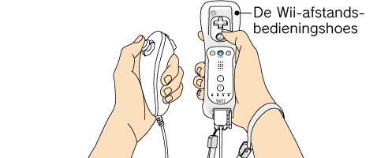

4 |
Controller-instellingen |
 |
De manier waarop je de Controllers vasthoudt is afhankelijk van de accessoires die al dan niet worden gebruikt in combinatie met de Wii-afstandsbediening.
Opmerking: Voor meer informatie over het bevestigen van het Wii-polsbandje en het aansluiten van de verschillende accessoires, raadpleeg de 
De Nunchuk gebruiken
Als de richtingsstick van de Nunchuk or Traditionele Controller zich niet in de neutrale positie (*) bevindt en niet normaal bediend kan worden, doe dan het volgende:
* De “neutrale positie” is de positie waarin de richtingsstick zich bevindt wanneer deze niet wordt gekanteld. Als de richtingsstick wordt gekanteld wanneer het Wii-systeem wordt aangezet of wanneer de Nunchuk wordt aangesloten op de Wii-afstandsbediening, wordt die stand ingesteld als de neutrale positie en zal de richtingsstick niet normaal functioneren.
|

 ,
,  ,
,  en
en  ingedrukt op de aangesloten Wii-afstandsbediening voor ongeveer drie seconden.
ingedrukt op de aangesloten Wii-afstandsbediening voor ongeveer drie seconden.

 |
 |
 |